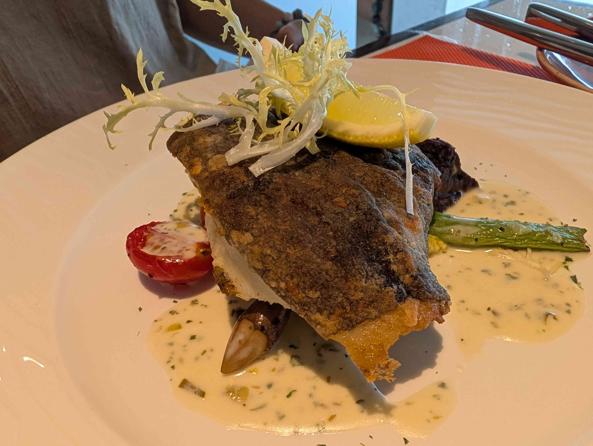
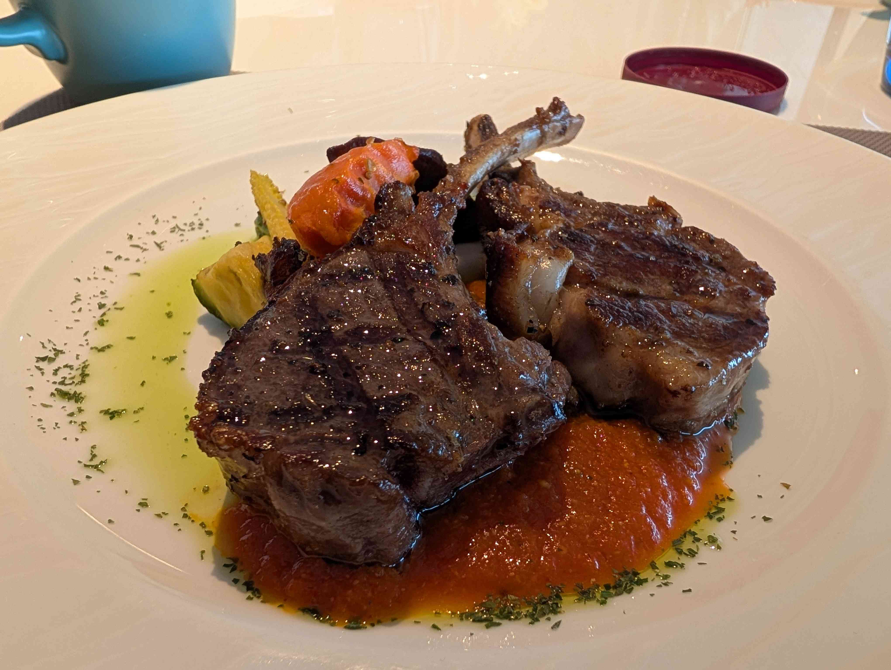

import os
print("Hello World")
:: PC連Pixel
adb tcpip 5555
adb connect 192.168.8.61:5555
scrcpyh3
test
| test | what if I have typed too long header | ||
| 1 | |||
| 2 | 6 | ||
| 3 | 3 | ||
| ffv | |||
| 8 | |||
| 9 | |||
| Sum: 14 | Avg: 6 | ||
| Sum: 14 |
# Querying-dqe_rule_dqe_config-Oracledb-SendEmail
#streamlit==1.41.1
#oracledb==2.5.1
#pandas==1.4.1
#numpy==1.24.4
#msal==1.32.0
#pyyaml==6.0.2
#requests==2.32.3
# Send email def & Send email at the end are 2 part for contructing the email and sending it
import streamlit as st
import pandas as pd
import oracledb
import yaml
import msal
import requests
from pathlib import Path
import datetime
@st.cache_data
def fetch_data(query):
"""
Connects to the Oracle database using oracledb in thin mode,
executes the provided SQL query, and returns the result as a pandas DataFrame.
"""
try:
# Establish connection using oracledb in thin mode
connection = oracledb.connect(
user='ISCGENPROD',
password='ISCGENPROD',
dsn="hktkoor1521/APPPD"
)
df = pd.read_sql(query, con=connection)
connection.close()
return df
except oracledb.Error as e:
st.error(f"Error fetching data: {e}")
return pd.DataFrame() # Return empty DataFrame on error
@st.cache_data
def get_unique_values(column, current_filters):
"""
Retrieves sorted unique values for a specified column from the dqe_rule_dqe_config table
based on the current_filters applied.
"""
query = f"SELECT DISTINCT {column} FROM dqe_rule_dqe_config"
if current_filters:
filter_conditions = " AND ".join(
[f"{col} = '{val}'" for col, val in current_filters.items() if val]
)
if filter_conditions:
query += f" WHERE {filter_conditions}"
df = fetch_data(query)
return sorted(df[column].dropna().tolist())
def reset_filters():
"""
Resets all filter selections in the session state.
"""
for key in filters.keys():
st.session_state[key] = ''
# Send email def
@st.cache_data
def send_email_graph_api(subject, body):
"""Send email using Microsoft Graph API"""
# Load email configuration
config_path = Path(__file__).parent / 'email_config.yaml'
with open(config_path) as f:
config = yaml.safe_load(f)
# Initialize MSAL client
app = msal.ConfidentialClientApplication(
config['clientId'],
authority=f"https://login.microsoftonline.com/{config['tenantId']}",
client_credential=config['clientSecret']
)
# Get access token
result = app.acquire_token_silent(["https://graph.microsoft.com/.default"], account=None)
if not result:
result = app.acquire_token_for_client(["https://graph.microsoft.com/.default"])
if "access_token" in result:
# Prepare email message with updated recipient address
email_msg = {
"message": {
"subject": subject,
"body": {
"contentType": "Text",
"content": body
},
"toRecipients": [
{
"emailAddress": {
"address": "knhkg.c3po@kuehne-nagel.com"
}
}
]
}
}
# Send email using Graph API (update endpoint to reflect the sending user)
headers = {
'Authorization': 'Bearer ' + result['access_token'],
'Content-Type': 'application/json'
}
response = requests.post(
'https://graph.microsoft.com/v1.0/users/knhkg.c3po@kuehne-nagel.com/sendMail',
headers=headers,
json=email_msg
)
if response.status_code == 202:
st.success("Email sent successfully!")
else:
st.error(f"Failed to send email: {response.text}")
else:
st.error(f"Failed to get access token: {result.get('error_description')}")
# Initialize Streamlit page configuration
st.set_page_config(layout="wide")
st.title("Querying ⛁ dqe_rule_dqe_config")
# Sidebar header for filter options
st.sidebar.header('Filter Options')
# Initialize filters without default values
filters = {
'STATUS': '',
'CUSTOMER_CODE': '',
'SOURCE': '',
'GRANULARITY': '',
'VALIDATION_TYPE': '',
'REGION': '',
'TRADE_DIRECTION': '',
'RULE_KEY': ''
}
# Button to clear all filters
if st.sidebar.button('Clear All Filters'):
reset_filters()
# Initialize current_filters based on session state
current_filters = {k: v for k, v in filters.items() if st.session_state.get(k)}
# Status filter
status_options = [''] + get_unique_values('STATUS', current_filters)
status = st.sidebar.radio('Status', options=status_options, key='STATUS')
current_filters['STATUS'] = status if status else ''
# Customer Code filter (sorted alphabetically for requirement 1)
customer_code_options = [''] + get_unique_values('CUSTOMER_CODE', current_filters)
customer_code = st.sidebar.selectbox('Customer Code', options=sorted(customer_code_options), key='CUSTOMER_CODE')
current_filters['CUSTOMER_CODE'] = customer_code if customer_code else ''
# Source filter
source_options = [''] + get_unique_values('SOURCE', current_filters)
source = st.sidebar.radio('Source', options=source_options, key='SOURCE')
current_filters['SOURCE'] = source if source else ''
# Granularity filter
granularity_options = [''] + get_unique_values('GRANULARITY', current_filters)
granularity = st.sidebar.selectbox('Granularity', options=granularity_options, key='GRANULARITY')
current_filters['GRANULARITY'] = granularity if granularity else ''
# Validation Type filter
validation_type_options = [''] + get_unique_values('VALIDATION_TYPE', current_filters)
validation_type = st.sidebar.radio('Validation Type', options=validation_type_options, key='VALIDATION_TYPE')
current_filters['VALIDATION_TYPE'] = validation_type if validation_type else ''
# Region filter
region_options = [''] + get_unique_values('REGION', current_filters)
region = st.sidebar.selectbox('Region', options=region_options, key='REGION')
current_filters['REGION'] = region if region else ''
# Trade Direction filter
trade_direction_options = [''] + get_unique_values('TRADE_DIRECTION', current_filters)
trade_direction = st.sidebar.radio('Trade Direction', options=trade_direction_options, key='TRADE_DIRECTION')
current_filters['TRADE_DIRECTION'] = trade_direction if trade_direction else ''
# Rule Key filter
rule_key_options = [''] + get_unique_values('RULE_KEY', current_filters)
rule_key = st.sidebar.selectbox('Rule Key', options=rule_key_options, key='RULE_KEY')
current_filters['RULE_KEY'] = rule_key if rule_key else ''
# Apply Filters button
if st.sidebar.button('Apply Filters'):
# Update filters dictionary with selected values
filters['STATUS'] = status if status else None
filters['CUSTOMER_CODE'] = customer_code if customer_code else None
filters['SOURCE'] = source if source else None
filters['GRANULARITY'] = granularity if granularity else None
filters['VALIDATION_TYPE'] = validation_type if validation_type else None
filters['REGION'] = region if region else None
filters['TRADE_DIRECTION'] = trade_direction if trade_direction else None
filters['RULE_KEY'] = rule_key if rule_key else None
# Construct SQL query based on filters
filter_conditions = " AND ".join(
[f"{col} = '{val}'" for col, val in filters.items() if val]
)
query = "SELECT * FROM dqe_rule_dqe_config"
if filter_conditions:
query += f" WHERE {filter_conditions}"
# Fetch data and display
df = fetch_data(query)
st.write(f"Number of rows returned: {len(df)}")
st.dataframe(df)
# Send email
timestamp = datetime.datetime.now().strftime("%Y-%m-%d %H:%M:%S")
subject = f"{timestamp} Filters applied"
body = f"Number of rows returned: {len(df)}\n\n{df.to_string()}"
send_email_graph_api(subject, body)
good
- [ ]
Yes, it works now !~!~
what else I can add? share map location
📍 Map: Westminster, Millbank, City of Westminster, Greater London, England, SW1P 3JX, United Kingdom
changed to london Westminster
h22

will it restore
why not update?
1. Each block should have a litter bit gap between blocks. now 2 text blocks and I cannot define where is end of 1st text block and where is the start of 2nd block.
2. image block, draw over image, it works to draw on image, however after save, what I drew was not on the correct image position. the scale and size issue make the drawing not on "what you see what you get". please align the image and the canvas and the tools that user will draw.
3. Upload file block, test .mp3 file uploaded but click it will crash/auto close the app. fix it and suppose this app will be wildly used in android/iOS/Mac/windows/Linux (5 platforms). so fix it to adapt various environments
4. make sure delete page link will not only delete page link(html), but also delete attachments related to that html
5. table block: all the placeholder should be pale in text.
6. make sure Advanced control map block is the same with map block. Keep DRY everywhere in this project
7. Advanced control: when "Generate page link" finished generate a page link, generate a QR code accordance with the page link in next block (just above divider).
8. add block_id, use random NanoID 6 digits with copy function (copy those 6 digits NanoID with # as prefix, for example: #1a2b3c). place it in left hand side 6 dot menu, above Delete block and divider; also, name it as "Copy block ID #1a2b3c", above this with one divider line. block_id with the block will never change. but the block can be deleted and block_id will be deleted as well.
9. in Advance control: add page_id, use random NanoID 6 digits with copy function. place it above the map block. page_id with the block will never change. but the page can be delete and page_id will be deleted as well.
10. text block: left hand side 6 dot menu, after "Text color", add "Mask with asterisk (*)", "Copy text"。if the current block text is masked with asterisk, then the left hand side 6 dot menu has to change "Mask with asterisk (*)" to "Unmask". Masked text in GitHub pages should keep masking; "Copy text" is going to copy the whole block text. allow user to select text across multiple blocks, android and iOS now can only select text with the block.
11. any block type, left hand side 6 dot menu, above "Delete block" and divider, add "Split block". then the function is going to add one more block horizontally. new block_id grant for the right new block, because the new block was splited from the left block, the left block_id remains unchanged. the limitation is the same row only allow up to 8 blocks. the splited blocks are shared the width equally.
12. Insert block, in between Upload file and YouTube embed, add "Upload to Telegram". Implement a Flutter StorageProvider named TelegramStorageProvider using Telegram MTProto client APIs instead of Bot API. Authenticate users via phone number, OTP, and optional 2FA, upload files to the user's Saved Messages, persist Telegram message_id and metadata in SQLite, and support file listing, retrieval, download, deletion, and synchronization across Android, iOS, Windows, macOS and Linux. under "Connect to GitHub" button on Settings, add "Connect to Telegram" button. user should link to telegram before uploading file to telegram.
13. "Upload to Telegram" structure in sqlite
CREATE TABLE bucket (
ID INTEGER PRIMARY KEY,
'File name' TEXT,
message_id TEXT,
remote_path TEXT,
created_at DATETIME8
Label TEXT);
14. Library page, in between Library and Calendar, add Bucket tab, this tab shows the sqlite table bucket; filename allows user to click and download the file where is in telegram. the columns "File name" and "Label" allow user to edit freely. in Library page search bar can search sqlite include "File name" and user self defined "Label" as well.
15. Insert block, in between Upload file and YouTube embed, add "Take pic as scan A4". place it above "Link to page". the function is taking photo become A4 size pdf like scan effect. auto detect 4 corners and adjust and save as A4 pdf.
16. Advanced control: when "Generate page link"/"Refresh page link" is clicked. Auto sync to GitHub first(git add ., git commit, git push)
17. Settings tab, "Manual sync" should be removed. replace with 2 new buttons. 1 is "Manual sync to GitHub" (git add ., git commit, git push), another one is "Manual sync from GitHub" (git fetch, git reset --hard). "Clear pending commits" button remain unchanged. place those 3 buttons in 3 rows.
18. in any situations, new device or new link with GitHub, there may have some note/data residual before linking to GitHub, after user link to GitHub, don't decide for the user to git pull or git push. let user manually first time to press "Manual sync to GitHub"/"Manual sync from GitHub" to decide local data or GitHub data as the single source of turth. after the first sync decision, the latest timestamp is the single source of turth. that means if GitHub page.md has been updated, then the rest device(s) should "Manual sync from GitHub"; if local device has any changes like update a block, then the device should "Manual sync to GitHub".
19. Keep the PageCrypt password in GitHub Actions Secrets. Run PageCrypt during the build GitHub Pages. Everytime user clicks "Generate page link" or "Refresh page link", ask user what password would like to set. if left blank, then the GitHub pages is public as no password.
20. remove all function related to GitLab. no GitLab login is needed in this project.
21. if already connected GitHub, any changes should be auto sync follow "batch interval" time. of course, it should respect the rest of sync policy in Settings set by user.
22. add OAuth alongside with PAT login to GitHub.
ask me questions if there is any unclear
make sure all above tasks are tested and verified working before stop iteration.
#codebase


23. Settings tab, add new section: "Large Language Model". Provide https://huggingface.co/Qwen/Qwen2.5-1.5B-Instruct-GGUF/resolve/main/qwen2.5-1.5b-instruct-q4_k_m.gguf
for user to download. When clicked, Save it into sandbox storage, just suggest as below, help me to best design it:
- Android: context.getFilesDir()
- iOS: Application Support directory
- Windows: %LOCALAPPDATA%/MyApp/models/
- macOS: ~/Library/Application Support/MyApp/models/
- Linux: ~/.myapp/models/
Ensure directory creation if missing. Show progress and completion status. Allow later offline access to the model file.
- hide with asterisk
- copy text
- save as draft and send message
- mermaid Mark Down
text block
add SQLite as database
GitHub pages + Formspree(store submission), GitHub actions to update Json and send FCM, flutter sync SQLite
take photo become A4 size pdf like scan effect
pdf ocr， tesseract OCR, if complicated, use paddle ocr(ncrr offline), design like allow user to download their languages
核心要求是“真·六平台全覆盖”，请改选方案(llama.cpp + FFI)
如果你需要同一个 Flutter 项目一套代码无缝跑满六大平台（Android, iOS, Windows, macOS, Linux, Web），推荐方案（flutter_llama_cpp / llama.cpp）：
核心原理：llama.cpp 是纯 C/C++ 写的，通过 Flutter 的 FFI（Foreign Function Interface）机制直连。只要有 C++ 编译器的地方就能跑。
跨平台兼容性：
Windows ➔ 调用 Metal / CUDA / Vulkan / CPU
macOS ➔ 调用 Apple Silicon Metal
Linux ➔ 调用 Vulkan / OpenCL / CPU
iOS / Android ➔ 调用 GPU / CPU
Web ➔ 编译为 WASM 运行
模型格式：Gemma 4 模型的 .gguf 格式在 llama.cpp 社区有现成的完整支持，下载即用。
使用 Flutter 官方插件 path_provider，将模型静默下载到应用的私有文档目录中
區分free和paid plan
接入 RevenueCat (Flutter Package: purchases_flutter)
RevenueCat 是独立开发圈的行业标准（对月流水小于 $10,000 美元的开发者完全免费）。
1✅ Create Bot
2✅ Create Private Channel
3✅ Add Bot as Admin
4✅ Get Channel ID
-- Upload a file via API
curl -F document=@report.pdf \
"https://api.telegram.org/bot<TOKEN>/sendDocument?chat_id=-1001234567890"
``
get the file_id:
"document": {
"file_id": "BQACAgUAAxkBA..."
-- Structure it in sqlite
CREATE TABLE file_storage (
id INTEGER PRIMARY KEY,
provider TEXT,
filename TEXT,
ile_id TEXT,
remote_path TEXT,
created_at DATETIME8);
# provider can be GitHub or Telegram to log
-- Retrieve file later
https://api.telegram.org/bot<TOKEN>/getFile?file_id=BQACAgUAAxkBA...
telegram returns:
"result": {
"file_path": "documents/file_123.pdf"
* ****** *** ****** *******
Gemma‑4‑E4B‑it GGUF 本身就是純文字模型
****** ****** ******* **** ******* ********* *********** **********************
聲音同樣會先經過 ASR（語音轉文字）flutter_whisper Base 模型（約 142MB），再交給文字模型。
最後，Gemma‑4‑E4B‑it 只接收文字 prompt，並輸出文字結果。
PowerShell split into 1.5gb each
# 設定檔案路徑與分段大小 (1.5GB)
$inputFile = "C:\Users\lawre\Downloads\gemma-4-E4B-it-Q4_0.gguf"
$chunkSize = 1500MB
$buffer = New-Object byte[] $chunkSize
$i = 0
$fs = [System.IO.File]::OpenRead($inputFile)
while ($fs.Position -lt $fs.Length) {
$read = $fs.Read($buffer, 0, $chunkSize)
$outFile = "C:\Users\lawre\Downloads\part-{0:D3}" -f $i
$outStream = [System.IO.File]::OpenWrite($outFile)
$outStream.Write($buffer, 0, $read)
$outStream.Close()
$i++
}
$fs.Close()
Powershell merge
$outFile = "C:\Users\lawre\Downloads\gemma-4-E4B-it-Q4_0.gguf"
$files = Get-ChildItem "C:\Users\lawre\Downloads\part-*" | Sort-Object Name
$outStream = [System.IO.File]::OpenWrite($outFile)
foreach ($file in $files) {
$bytes = [System.IO.File]::ReadAllBytes($file.FullName)
$outStream.Write($bytes, 0, $bytes.Length)
}
$outStream.Close()
合併後 sha256sum 驗證:
certutil -hashfile gemma-4-E4B-it-Q4_0.gguf SHA256
I need code that handles large model files split into multiple parts.
1. On server side, use standard Unix `split` to break a 5GB file into 3 parts:
split -b 1900m gemma-model.gguf gemma-part-
2. Upload each part (≤2GB) to GitHub Release.
3. In Flutter client:
- Download all three files sequentially using `http` or `dio`.
- Save them into app sandbox (platform-specific path).
- After each download, verify checksum (e.g. SHA256).
- When all downloads complete, concatenate them in correct order:
cat gemma-part-aa gemma-part-ab gemma-part-ac > gemma-model.gguf
(or equivalent Dart File I/O code).
- Ensure final file integrity matches original checksum.
Goal: user presses one button → app downloads 3 parts → verifies → merges → produces full GGUF model ready for inference.